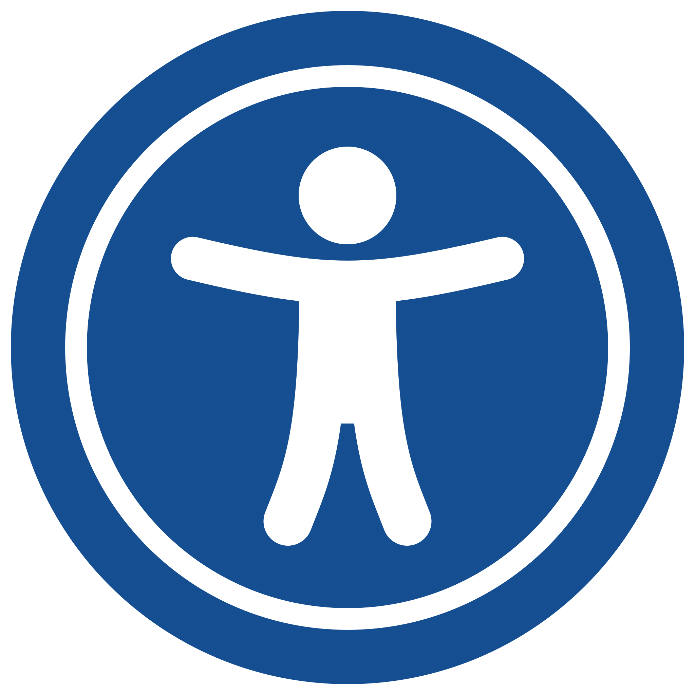
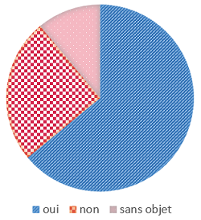

Il était une fois... l'accessibilité numérique
Sensibilisation à l'accessibilité numérique
Isabelle RAVET
Marie-Anne HOULBREQUE LOBO
Il était une fois... l'accessibilité numérique
Parce que le périple de tous les grands héros se déroule ainsi :
- Prologue
- Naissance du héros et appel de l'aventure
- Épreuves et initiation
- Affranchissement du mentor
- Accomplissement de la quête
- Retour au pays
- Épilogue
Prologue
Il était une fois...
en l'an de grâce 1990, un homme, nommé Tim Berners-Lee, qui inventa...
- 1994 : world wide web consortium (W3C).
- 1999 : web content accessibility guidelines (WCAG).
Il était une fois... l'accessibilité numérique
Parce que le périple de tous les grands héros se déroule ainsi :
- Prologue
- Naissance du héros et appel de l'aventure
- Épreuves et initiation
- Affranchissement du mentor
- Accomplissement de la quête
- Retour au pays
- Épilogue
1999 - Naissance d'un concept universel : l'accessibilité numérique
Êtes-vous prêts à répondre à l'appel de l'aventure ?

Qu’est-ce-que l’accessibilité numérique ?
Question 1
Selon vous, qu’est-ce que l’accessibilité numérique ?
Qu’est-ce-que l’accessibilité numérique ?
Réponse
- Ensemble de bonnes pratiques et de règles
- Objectif : rendre les supports numériques accessibles à tous... y compris aux personnes en situation de handicap.
Définition de l'accessibilité numérique
L'accessibilité numérique permet à quiconque de percevoir, comprendre, naviguer et d'apporter sa contribution au numérique quels que soient les outils ou moyens utilisés.
Supports numériques ? Personnes en situation de handicap ?
Question 2
Pour vous, quels sont les différents types de supports numériques ?
Réponse
Les différents types de supports numériques
- Sites web : intranet, extranet, internet
- Applications mobiles : Android et IOS
- Cours e-learning
- Vidéos
- Documents bureautiques :
traitement de texte, tableur (graphiques)... et PDF - Télévision
- Mobiliers urbains
Un contenu unique quel que soit le support/quel que soit le handicap
L'accessibilité numérique ne consiste pas à démultiplier les supports !
L'accessibilité numérique consiste à créer un seul contenu qui respecte des règles :
- graphiques,
- fonctionnelles
- et techniques.
escalier mécanique avec des marches en braille
Parlons handicap - Question 3
À votre avis...
D'après l'OMS, combien existe-t-il de catégories de handicap ?
- 3 catégories
- 5 catégories
- 10 catégories
Réponse 2
5 catégories
- Le handicap moteur (dont déficience motrice)
- Le handicap sensoriel (vue, ouïe...)
- Le handicap mental (dont déficience intellectuelle)
- Le handicap psychique (pas de cause connue)
troubles dépressifs, burn-out, bipolarité... - Les maladies invalidantes
endométriose, fybromyalgie, maladie de Crohn...
Quelques logotypes de handicap
- Maladies invalidantes
- Déficience motrice (amputation)
- Déficience motrice (fauteuil roulant)
- Allergies
- Maladies cardio-vasculaires
- Déficience intellectuelle ou handicap mental
- Déficience auditive
- Déficience motrice
- Déficience visuelle
- Déficience psychique ou maladie mentale
Question 4
À votre avis...
Tous les handicaps sont-ils visibles ?
- Oui, ça saute aux yeux !
- Non, 50% des handicaps sont invisibles.
- Non, 80% des handicaps sont invisibles.
Réponse 3
- 80 % des handicaps sont invisibles
- Un handicap peut être permanent ou temporaire.
Le handicap en France, quelques chiffres
- 1,7 million de déficients visuels
Aveugles, malvoyants, trouble de perception des couleurs.... - 1,6 million de déficients auditifs
sourds, malentendants - 2,3 millions de handicaps physiques
Déficience du contrôle musculaire, perte de sensibilité, douleur, tremblements... - 0,7 million de handicaps cognitifs
Dyslexie, troubles de la concentration ou de la mémoire, épilepsie... - Et tous les autres
Troubles temporaires dus à la fatigue, les pathologies liées au vieillissement, fractures, ...
- Tous types de handicaps confondus : 12 millions
(source Insee, 2016) - Taux de chômage des personnes en situation de handicap : 19% contre 9% pour le reste de la population, chiffres 2017 (source AGEFIPH/POLE EMPLOI/DARES/INSEE)
Le handicap en France, quelques chiffres
- 85 % des déficiences interviennent après l’âge de 16 ans.
- 1 personne sur 2 connaît une situation de handicap au cours de sa vie professionnelle.
- 8 % des hommes sont daltoniens (0,5 % des femmes).
- 3 à 5 % de personnes sont atteintes de troubles DYS (dont 1% atteint de troubles sévères).
Le handicap en France, quelques chiffres
... Sans oublier...
Les aidants familiaux
La scolarisation des enfants en situation de handicap
Certains enfants handicapés ne sont pas scolarisés...
Question 5
À votre avis...
L'aventure "A11Y" vous appelle, que répondez-vous ?
- Non, parce que je
ne suis pas
en situation de handicap. - Non, parce que je
ne crée pas
de sites web. - Oui, parce que je
produis
régulièrement du contenu numérique.
Réponse 3
Contenus numériques :
- Documents bureautiques :
- Writer, calc...
- Documents pdf.
- Messagerie.
- Contributeurs internet, intranet, twitter...
Il était une fois... l'accessibilité numérique
Parce que le périple de tous les grands héros se déroule ainsi :
- Prologue
- Naissance du héros et appel de l'aventure
- Épreuves et initiation
- Affranchissement du mentor
- Accomplissement de la quête
- Retour au pays
- Épilogue
Épreuves et initiation

- La déficience motrice
- La déficience auditive
- Les déficiences mentales, cognitives et psychiques
- La déficience visuelle
1/4 - La déficience motrice
Les types de déficiences
- Tétraplégie
- Paralysie cérébrale
- Sclérose
- Arthrite
- Tendinite
- ...
Question 6
Connaissez-vous des solutions d'accessibilité pour compenser la déficience motrice ?
Les solutions matérielles et programmatives à la déficience motrice
Exercices : tester la navigation clavier (touches Tab et Maj-Tab) sur le site Librest :
- Combien de clics pour s'inscrire à la newletter ?
- Ajouter le livre "La suggestibilité" au panier
2/4 - La déficience auditive
Les types de déficiences
- Surdité
- Malentendance
- Acouphènes
Un exemple : Insee, un jour comme les autres.
Question 7
Connaissez-vous des solutions d'accessibilité pour compenser la déficience auditive ?
Quelques solutions à la déficience auditive

- Lecture labiale
- Sous-titrages / transcription textuelle
- Langue des signes française
- Boucle magnétique
Un exemple : Pour comprendre les statistiques de l'Insee.
3/4 - Les déficiences mentales, cognitives et psychiques
Les types de déficiences
- Dyslexie, dyspraxie, dyscalculie…
- Troubles de l’attention
- Troubles de la mémoire...
Exemples
Question 8
Connaissez-vous des solutions d'accessibilité pour compenser les déficiences mentales, cognitives et psychiques ?
Quelques solutions aux déficiences mentales, cognitives et psychiques
Critères ergonomiques de Bastien et Scapin (2 - Charge de travail).
- Prévoir un système d'auto-complétion.
- Prévoir des processus par étape.
- Limiter la densité informationnelle.
- ...
{kind=link}
{kind=link}
4/4 - La déficience visuelle
Les types de déficiences
- Cécité
- Vision tubulaire
- Glaucome
- Daltonisme
- ...
Question 9
Connaissez-vous des solutions d'accessibilité pour compenser la déficience visuelle ?
Quelques solutions à la déficience visuelle
- Activer le contraste renforcé : ALT + MAJ + Impr écran
- Les claviers braille
- Les lecteurs d'écran (vocalisation)
- ...
Il était une fois... l'accessibilité numérique
Parce que le périple de tous les grands héros se déroule ainsi :
- Prologue
- Naissance du héros et appel de l'aventure
- Épreuves et initiation
- Affranchissement du mentor
- Accomplissement de la quête
- Retour au pays
- Épilogue
Notre mentor : La loi !
Guide de bonnes pratiques : le RGAA
Le Référentiel Général pour l'Amélioration de l'Accessibilité (RGAA)
Les entités concernées par les obligations légales
- Les organismes publics
- Les organismes délégataires d’une mission de service public.
- Les personnes morales de droit privé à but non lucratif
(notamment les associations de loi 1901) ayant une mission d’intérêt général et proposant des services essentiels au public ou des services pour les personnes handicapées. - Les entreprises privées dont le chiffre d’affaires (réalisé en France) est d’au
moins 250 millions d’euros.
(Cela concerne environ 500 entreprises en France.)
Le RGAA
Audit RGAA
- 13 thématiques : couleurs, présentation de l'information, navigation, images...
- 106 critères
Un site non audité est considéré comme "Non conforme".
Textes législatifs complémentaires

Notion d'aménagement raisonnable
« On entend par “aménagement raisonnable” les modifications et ajustements nécessaires et appropriés n’imposant pas de charge disproportionnée ou indue apportés, en fonction des besoins dans une situation donnée, pour assurer aux personnes handicapées la jouissance ou l’exercice, sur la base de l’égalité avec les autres, de tous les droits de l’homme et de toutes les libertés fondamentales. »
Article 2 de la CRDPH.Sanctions
Refus d'aménagement raisonnable
Considéré comme de la discrimination
Article 225-2 du code pénal : entre 3 et 5 ans d'emprisonnement et 45 000 à 75 000 euros d'amende.
Manquement aux obligations d'affichage
Une amende de 25 000 euros possiblement reconduite chaque année tant que le manquement n’est pas corrigé.
La directive européenne
- Limitation du champ de l’obligation (organismes concernés, contenus, services).
- Possibilité de dérogation pour charge disproportionnée.
- Définition d’une déclaration de conformité.
- Contrôle du niveau d’accessibilité par les États membres à prévoir en vue d’un rapport triennal à la Commission européenne.
frise chronologique : de 2005 à 2019, directive à prendre en compte avant juin 2022
À l'Insee, où en est-on ?
Observatoire de la qualité : Les 250 démarches phares de l’État.
Un seul site Insee : le Recensement de la population.
Une amélioration en continu
De plus en plus de maîtrise d'ouvrage demandent des audits partiels ou complets.
Cela a permis
- d'améliorer l'accessibilité de plusieurs services numériques de
l'Insee :
- Page contact du site Insee.fr,
- Application Insee mobile.
- de refondre des sites internet :
- RP et moi,
- Statut de diffusion Sirene...
- de prendre en compte l'accessibilité numérique dès le début d'un
projet :
- Poste de gestion Sirene 4
- Téléprocédure d'habilitation des dirigeants d'entreprises
État des lieux en janvier 2023
| Nom de l'application | Taux de conformité (en %) | Référentiel | Date audit/ déclaration |
|---|---|---|---|
| Mélopée - Enquête emploi (coleman) | 33 | RGAA 4.0 | 10/2020 |
| Coleman | 38 | RGAA 4.1 | 11/2022 |
| Collecte-recensement.insee.fr | 39 | RGAA 4.0 | 01/2020 |
| CSNS | 47 | RGAA 4.1 | 05/2022 |
| Authentification standard - Keycloak | 64 | RGAA 4.0 | 15/09/20 |
| R2D2 | 66 | RGAA 4.0 | 04/2020 |
| Insee.fr | 68 | RGAA 4.1 | 10/2022 |
| Dataviz des salaires | 69 | RGAA 4.1 | 10/2022 |
| Authentification - personnalisée Keycloak | 75 | RGAA 4.0 | 15/09/20 |
| TBEF | 76 | RGAA 4.1 | 07/2022 |
| Le recensement et moi | 78 | RGAA 4.1 | 10/2022 |
| Pyramide des âges | 90 | RGAA 4.1 | 07/2022 |
Taux de conformité à l'Insee
Le taux de conformité moyen calculé sur l’ensemble des produits vus par le Rani
est d’environ
35 %.
Pour information, on estime qu’un site est relativement
« confortable » à partir de 75 %.
3 sites Insee totalement conformes
100% de conformité au RGAA 4.1 (106 critères) :
Téléprocédure d’habilitation sur tous les
portails publics, Avis de situation Sirene et Changement
de statut de diffusion Sirene.
Téléprocédure d’habilitation sur tous les portails publics - Avis de situation Sirene - Statut de diffusion Sirene
Il était une fois... l'accessibilité numérique
Parce que le périple de tous les grands héros se déroule ainsi :
- Prologue
- Naissance du héros et appel de l'aventure
- Épreuves et initiation
- Affranchissement du mentor
- Accomplissement de la quête
- Retour au pays
- Épilogue
Accomplissement de la quête

Surmonter les épreuves - apothéose - don suprême.
Surmonter les épreuves -apothéose - don suprême.
Surmonter les épreuves de la communication numérique
La messagerie
- Privilégier un fond blanc sans arrière-plan.
- Taille de police de 12pt minimum.
Fichier - Options - Courrier - Papier à lettre et polices - Thèmes personnels - Polices - Utiliser les outils de mise en forme de la barre d'outils (notamment les listes à puces).
- Utiliser des couleurs de texte suffisamment contrastées par rapport au fond
- Application Color Contrast Finder.
- Logiciel Color Contrast Analyser
Messagerie et réseaux sociaux
- Éviter les caractères cryptiques et émojis dans le corps du message.
Faux gras, abus d'émojis : le détournement des caractères Unicode, fléau pour l'accessibilité du web - Éviter l'utilisation d'émojis à la place des caractères
Lecture par un lecteur d'écran d'un tweet avec émojis à la place des vrais caractères
Commentaire
Surmonter les épreuves -apothéose - don suprême.
Surmonter les épreuves des documents Writer
- Structure et mise en forme
- Titre 1, Titre 2...
- Listes à puces ou à numéros.
- Table des matières
document de + de 4 ou 5 pages. - Pas de mise en forme avec les tableaux
choisir : colonnes. - Utiliser les fonctions de formatage
alignement, retrait de paragraphes...
au lieu des touches <Tab>, <espace> et <Entrée>.
- Polices lisibles
- Police sans serif (Arial, Verdana, Luciole).
- Taille minimum de 12pt.
- Pas de justification.
- Éviter le "tout majuscule".
- Pas d’écriture inclusive.
- Des couleurs bien contrastées.
- Liens avec des intitulés explicites.
- Texte de remplacement pour les photos, graphiques…
- Méthode FALC : Facile à Lire et à Comprendre
- Fiches à télécharger : Simplifier les documents administratifs
- Tester l'accessibilité : Outils - Vérification de l'accessibilité
Site documentaire "Accessibilité des documents bureautiques"
Commentaire
Surmonter les épreuves -apothéose - don suprême.
Surmonter les épreuves des documents Calc
- Ajouter des étiquettes
- Feuille > Plages ou expressions nommées > Etiquettes.
- Entêtes sur une seule ligne
- Éviter de fusionner ou fractionner des cellules
- Éliminer les cellules vides
(écrire : « Non renseigné ») - Ne pas se servir des fonctionnalités avancées.
- Des couleurs bien contrastées.
- Veiller à ce que l'information ne soit pas portée uniquement par la couleur (graphiques).
Question 10 : Surmonterez-vous cette épreuve ?
Lequel de ces graphiques n'est pas accessible ?
- 
Réponse 2
Surmonter les épreuves - apothéose - don
suprême.
L'apothéose
Les fichiers PDF
Si votre document est bien formaté, la moitié du chemin est faite !
- Fichier - Exporter vers - Exporter au format PDF
Surmonter les épreuves - apothéose -
don
suprême .
Le don suprême : penser "accessibilité"

L'accessibilité numérique pour le bénéfice de tous
L'accessibilité numérique favorise :
L’inclusion sociale
- Éviter la discrimination.
- Permettre l’accès à l’information et aux démarches en ligne à toutes et tous.
- Favoriser le recrutement et le maintien dans l’emploi de personnes en situation de handicap.
Pour le bénéfice de tous : Satisfaire l’ensemble de ses utilisatrices et utilisateurs.

Numérique responsable
L'accessibilité numérique s'inscrit dans la démarche d'écoconception de services numériques.
Il était une fois... l'accessibilité numérique
Parce que le périple de tous les grands héros se déroule ainsi :
- Prologue
- Naissance du héros et appel de l'aventure
- Épreuves et initiation
- Affranchissement du mentor
- Accomplissement de la quête
- Retour au pays
- Épilogue
Le retour du héros
Le Réseau Accessibilité Numérique de l'Insee (Rani)
Les missions
- Évaluation des applications,
- Conseil et assistance pour les projets (internes ou progiciels),
- Mise en place d’outils et de référentiels...
Proposition et participation
- aux actions de communication, de sensibilisation ou de formation,
- à la veille technologique,
- à la documentation
Contacts et ressources
10 correspondants à l'Insee
- Un espace Symphonie dédié : https://intranet.insee.fr/rani
- Des lettres d'information
- Site documentaire "Accessibilité des documents bureautiques"
- Bal fonctionnelle : dg75-rani@insee.fr ou
:DG75-Réseau accessibilite numerique - Salon Tchap : Insee - accessibilité numérique
Commentaire
Les offres de formation
- Sensibilisation à l'accessibilité numérique (tout public).
- Contribuer accessible (contributeurs web).
- Spécifions accessible (l'accessibilité pour les chefs de projets et maîtrises d'ouvrage).
- Codons accessible (l'accessibilité numérique pour les développeurs).
Commentaire
Il était une fois... l'accessibilité numérique
Parce que le périple de tous les grands héros se déroule ainsi :
- Prologue
- Naissance du héros et appel de l'aventure
- Épreuves et initiation
- Affranchissement du mentor
- Accomplissement de la quête
- Retour au pays
- Épilogue
Épilogue
Tant que ce n'est pas accessible, ce n'est pas terminé !